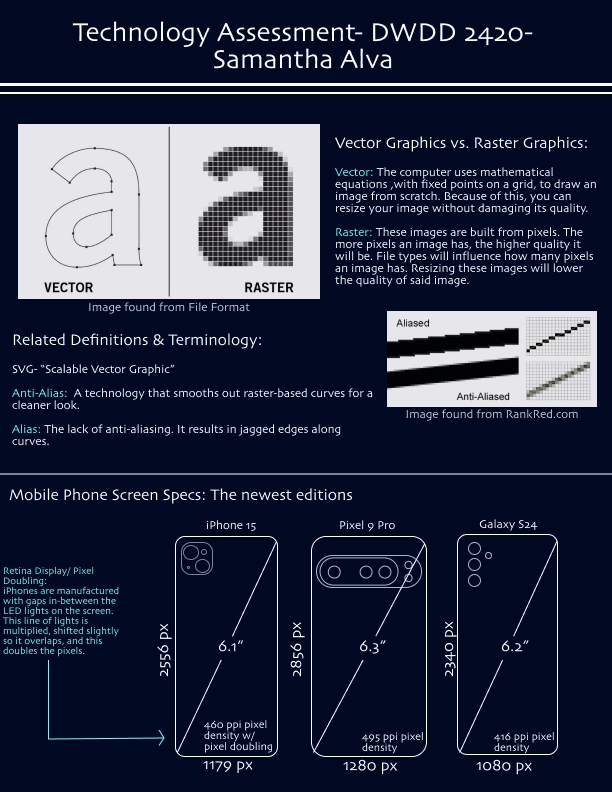
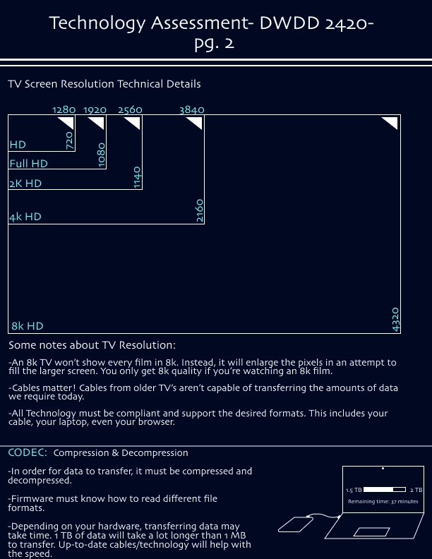
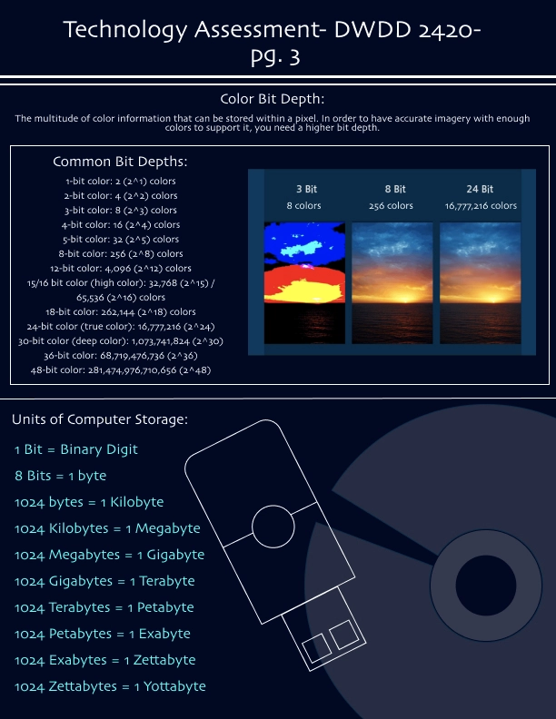
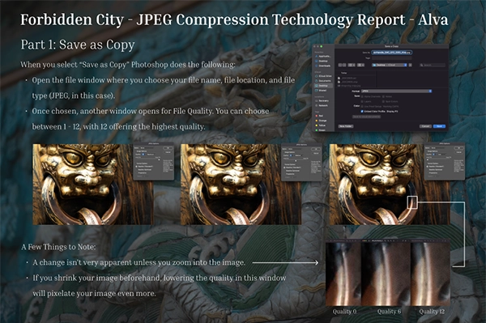
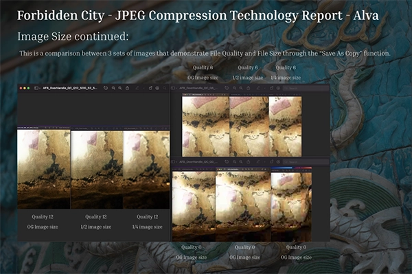
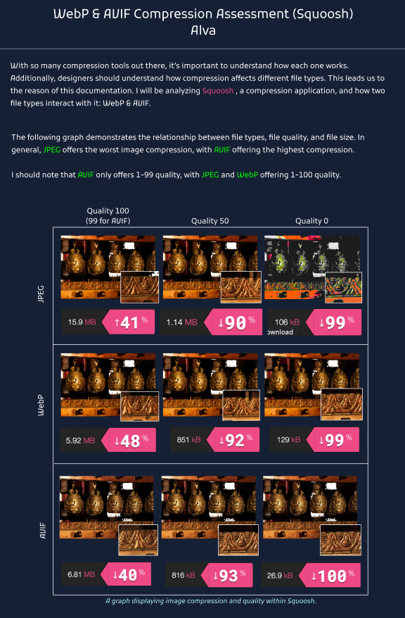
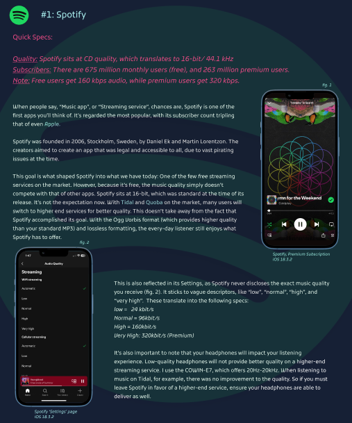
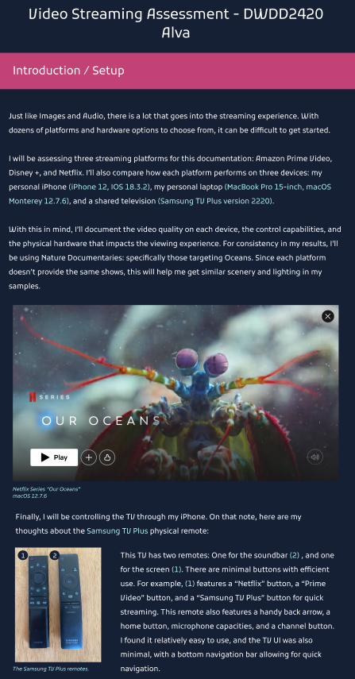
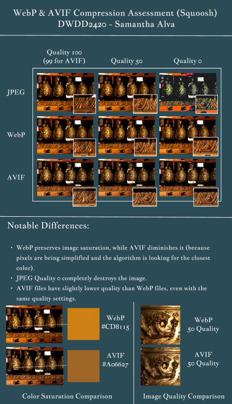
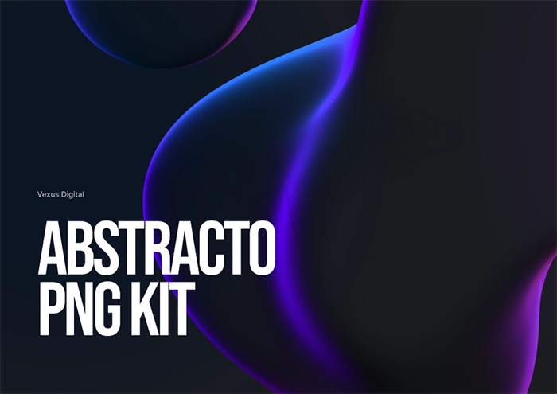

Project Overview
Two semesters ago, I took Inputs and Outputs at UVU (DWDD2420). We were tasked gaining a deeper understanding of technology throughout the class. To accomplish this, we had to assemble a large document covering everything we learned in and outside of the classroom. This documentation had three sections: Basics and file CODECS, audio, and then video. I had to do a lot of iterations at the end of the year, but I emerged with the first project I was truly proud of.
Diving In
When I first started this project, I was experimenting a lot with the style. I didn’t realize it all
had to be unified by the end of the semester, so I was just going with the flow. Because of the
nature of this class, there were no paper sketches or low-fi mockups. We just completed a portion of
the documentation, turned it in, and then moved on to the next assignment after ample research.
My first submission is below. Unlike my other classmates, I decided to do a portrait view. I
also utilized a deep blue color paired with teal. It’s silly, because at the time I had people
telling me I was allergic to white backgrounds. They were right. I submitted these and realized I
didn’t like them very much (visually, the information was good), so I changed things up for the next
assignment.



The next module covered Photoshop’s export options with photos. We had to go out and test image
quality, size, compression abilities, and discuss how those all related to each other. My professor
provided professional photos he had taken, and it was these photos that informed this next design.
This is where a few key issues come in. The most obvious is the background. I figured I could use
the photos for a thematic touch, but this created a lot of visual chaos. mix this with a serif font
and it’s hard to focus on anything. My graphs also needed some help, as the screenshots were lazily
thrown in and labeled. It didn’t feel professional, and these are by far some of my worst designs.


A Phase of Experimentation
As you can see, the following stages went through a lot of iteration. Blue is my favorite color, so I
experimented with different types of blues. I also experimented with different graph layouts and
visual touches. However, one of the most notable changes was the introduction of pink. I did this
because Squoosh, an application we were exploring, used this as its’ main color. You’ll see it
appear in my WebP & AVIF breakdown, and stay within the design until the final phase.
Another issue in my submissions was their different dimensions. Not only were they different in
color or style, but they wouldn’t work well together in a single PDF.




The Turning Point
We were presenting our designs in-class, when a peer introduced me to a fantastic design idea. He was using the design kit “Abstracto”, and it worked really well within his design. I was already doubtful about my own design, which had transformed into a navy blue background with a pink banner for header text. I was okay with it, but not necessarily proud of it.

My Final Results
When I began to unify everything with a new design in mind, I didn’t realize how long it would take, But I ended up with over 40 pages of content. I remember sitting in the UVU food court for at least 4 hours. I employed a black background, different colored headers for each module, and covers/ introductions whenever needed. When I finished, I couldn’t be prouder.
My Discoveries
This project took a lot of time and energy to accomplish. I’m very proud of what I did, especially considering how long it took. If I were to go back, I’d try to establish an effective design from the get-go. It was difficult to switch the design up every assignment, especially when I was already focusing on the technical information within each module. I spent a lot of time in Figma, exploring technology at home, and learning ways to optimize my own technology. I remember discovering the existence of an AUX cord (I know, crazy), and starting to use one in my car because it slightly improved the audio quality. I wish I had sketched out my ideas first, and really explored different designs before solidifying it so early on. It would have saved me a lot of time, but in the end, the extra time was 100% worth it.